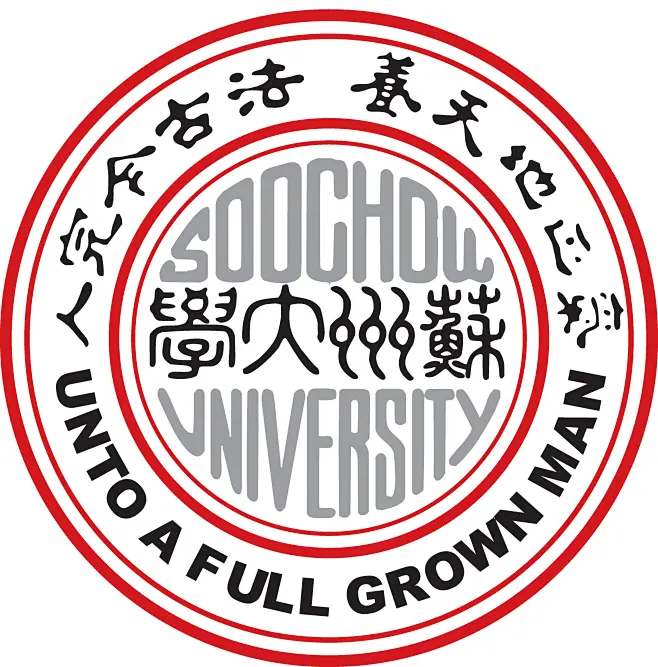

✦ 关于我
你好，我是曹梦杰。目前在北京交通大学攻读企业管理硕士，专注于数据挖掘、商务智能与战略管理。曾在美团、理想、京东等公司实习，深耕大模型评测、数据运营与 AI 产品方向。热爱用数据驱动决策，也乐于探索 Cursor、Chatbot 等 AI 工具在业务中的落地。期待与志同道合的朋友交流。
学历背景
企业管理 硕士
- 核心课程：数据挖掘与商务智能、中级计量经济学、组织行为理论、战略管理等

苏州大学
2019.09 - 2023.06
管理学（辅修心理学） 本科
- GPA: 3.8/4.0（前10%）
- 核心课程：高等数学、线性代数、运筹学、统计学、微观经济学、宏观经济学等
- 荣誉：优秀毕业生、三好学生、学习优秀奖学金、精神文明奖学金等
实习经历
开放问题评测
- 评测框架：「背景目标」针对传统主观评测中个人偏好噪声大、稳定性低的行业痛点，旨在构建一套剥离个人偏好、基于群体共识的自动化评测体系；「行动&结果」聚焦指令遵循、安全性、真实性等高共识维度，将评价标准拆解为细粒度的原子化指标，设计并落地“准入判定-基准定档-缺陷降档”的三级分层聚合框架，替代传统模糊打分逻辑，最终产出高置信度的绝对分指标及模型对战榜单。
- 数据建设：「背景目标」为支撑评测框架，需构建一个覆盖真实分布、高难度且易达成共识的基准数据集；「行动&结果」基于C端/B端头部高频需求，采用“高质量种子+场景化扩写”的作业模式，构建了覆盖中英文、多任务的2000+条高难度开放数据集；
- 打分方案：「背景目标」为高效指导文本模型的快速、精准迭代，期望有一个对齐人类偏好、打分稳定的评估模型；「行动&结果」采用“ModelEval初评 + Human-in-the-loop质检”的混合评估模式，自动化评估准确率超70%；产出的模型对战榜单与LMSYS Chatbot Arena的PLCC达到0.7+，成功支持LongCat系列模型的多轮迭代上线；
应用评测
- 类目体系建设：「背景目标」面对高复杂度的C/B端需求，期望快速寻找高价值场景，指导评测开展；「行动&结果」基于内外部调研，构建“行业/场景/任务”三级类目体系，定义代码、商品零售、金融等10大行业，并进行二级场景细分；同时参考Anthropic Economic Index百万数据聚类后的600+任务构建规划、创作、数据分析等8大任务；该体系成功指导了应用评测集V2.0/V2.1的数据分布均衡化。
- 主客观数据集建设：「背景目标」针对早期评测集建设流程模糊、人工依赖度高的问题，期望通过SOP优化提升数据生产的透明度与数据质量；「行动&结果」基于类目体系开展数据分布对齐，制定高区分度与真实性标准；重构数据建设SOP，覆盖“挖掘-打标-质检-校验”全链路，并引入LLM-as-a-Judge实现自动化预标注与分流质检，显著提升数据生产人效；最终交付应用评测集V2.0，定向补充150+条复杂工具调用（Function Call）客观题与200+条垂类行业主观题。
数据自动化
- 「背景目标」针对绩效分析场景中数据源分散、重复劳动多的痛点，旨在重构数据处理流程，实现从清洗到可视化的全链路自动化分析，释放人力资源；「行动&结果」基于Python构建端到端的数据处理Pipeline，打通飞书绩效与本地数据流，自动化完成清洗、50+核心指标逻辑运算及多维交叉验证，实现图表绘制与PPT报告的一键输出；将季度/年度分析周期由5天压缩至1天，显著降低人工操作误差。
销售AI Talent
- 「背景目标」解决销售人才画像模糊、成长路径难以量化的痛点，期望构建数据驱动的金牌专家识别体系与能力评估模型，推动人才全生命周期管理的闭环落地；「行动&结果」处理千万级业务流水值数据，并引入LLM对非结构化文本数据进行语义打标，构建覆盖销售专家“过往履历/基础素质/业务绩效”的全生命周期200+高维特征库；利用统计、聚类构建专家画像，基于随机森林、XGBoost等训练金牌专家预测模型，正确率（ACC）达80%+，同时引入SHAP值进行模型可解释性分析，输出关键影响因子以指导业务管理；基于低代码平台在3个月内完成从算法原型到销售AI Talent前端产品的搭建与测试，实现了从模型预测到业务决策辅助的闭环交付；
数据运营
- 「背景目标」子集团招聘需求大、人力有限，需快速利用数据帮助招聘团队提效，但数据繁杂、口径不一；期望快速搭建招聘数据中台，助力团队优化招聘流程。「行动&结果」梳理招聘全流程数据，撰写指标说明书（含招聘结果、效率、进度、质量、合规与体验五方面指标），统一计算口径，拉齐各方对数据的认知；同时，利用内部招聘看板系统、PS系统及Excel等搭建数据看板，实现周度、月度、季度的数据自动化更新，帮助招聘团队阶段性复盘与优化；此外，By多级业务部、招聘人员、岗位以及时间等维度进行深入分析，挖掘各指标卡点并优化，最终助力招聘团队达成Q3核心业务指标。
资源管控与横向项目
- 资源管控：招聘财务资源管控与预算，如招聘网络渠道费、差旅费、背调费、猎头费、校招费等；招聘信息资源支持，包括二次回流、绩效查询、简历信息修改等；招聘网络渠道资源支持，包括猎聘、BOSS、脉脉等的账号开通与分配。
- 横向项目：内部招聘看板系统4.0试点落地、内推渠道建设、面评流程规范、候选人面试体验优化、入职人员背景分析等。
竞赛活动
“正大杯”第十五届市场调查与分析大赛北京赛区（研究生组）一等奖2025.01 - 2025.04
2024年“挑战杯”首都大学生创业计划竞赛北京市三等奖2024.04 - 2024.05
第二届全国大学生数据统计与分析竞赛二等奖2023.06 - 2023.06
AI 使用
日常工作中深度使用 AI 工具提效，按场景分工、各取所长：
日常
Gemini — 日常问答、资料检索、写作润色、思路梳理的首选，多模态与长上下文能力实用。
代码
Cursor — 写代码、调试、重构的主力工具，与 IDE 深度集成，补全与对话体验流畅。
音视频
Gemini、Seed — 音视频处理常用这两个模型，支持多模态理解与生成。
个人技能
Python
JavaScript
SQL
Chatbot
Cursor 等 AI 工具
MS Office 国家二级
英语 CET-6